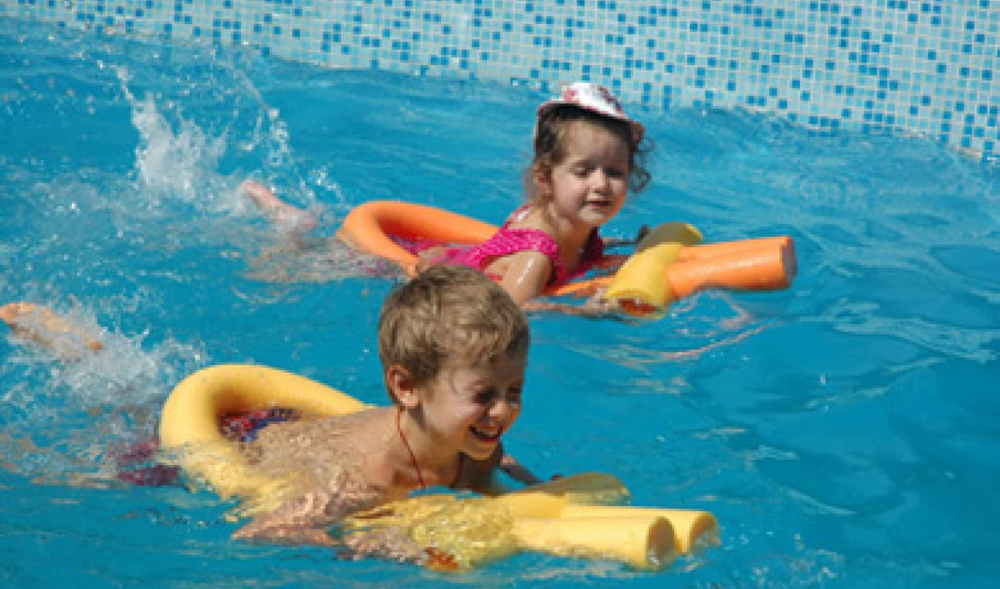
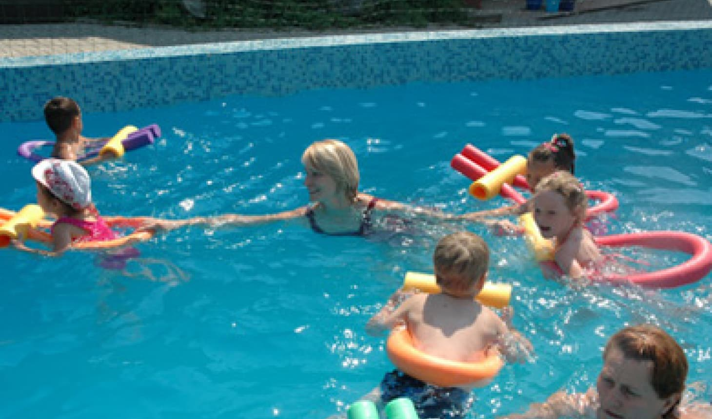

{% set title = "Бассейн" %} {% extends "layout.html" %} {% block content %}

<div class="inner-container">
    <div class="standard-page">
        <h2 class="standard-page__heading">
            Бассейн
        </h2>
        <div class="standard-page__content">
            <p>
                Вода — великолепное средство для физического развития и закаливания ребенка. Во время занятий плаванием стимулируется дыхание, улучшается кровообращение, деятельность сердца. Благодаря тому, что в воде тело ребенка в несколько раз
                легче, занятия плаванием прекрасно развивают и укрепляют мышцы.
            </p>
            <p>
                Занятие плаванием занимает особое место в физическом воспитании и развитии ребенка, укреплении здоровья с самого рождения. Благотворное влияние плавания на организм ребенка бесспорно. Благоприятные условия для развития физических
                качеств и возможность предупреждения опасных ситуаций на воде ставит плавание на одно из первых мест в физической культуре.
            </p>
            <p>
                Главная цель наших занятий - дать понять малышу, что вода - это замечательно! Занятиями в бассейне мы формируем у ребенка понятие о здоровом образе жизни, укрепляем здоровье и всесторонне развиваем ребенка. Нацеливаем ребенка на
                достижение спортивных результатов.
            </p>
            
            <hr />
            <blockquote style="text-align: left; color: #6A92F8">
                Тренеры нашего клуба - это опытные дипломированные специалисты с высшим образованием в области физической культуры, мастера спорта, участники известных соревнований, первенств, олимпиад, обладающие большим стажем работы в области
                обучения плаванию.
            </blockquote>
            <div class="images-block">
                <div class="images-block__row">
                    <div class="images-block__item">
                        <div class="image-block__card">
                            
                        </div>
                    </div>
                    <div class="images-block__item">
                        <div class="image-block__card">
                            
                        </div>
                    </div>
                </div>
            </div>
            <h3>
                Основные наши задачи
            </h3>
            <ul>
                <li>
                    Овладение навыками плавания, обучение техникам всех видов плавания и приобретение широкого круга двигательных навыков.
                </li>
                <li>
                    Развитие физических качеств: выносливости, быстроты, скорости, силовых и координационных возможностей.
                </li>
                <li>
                    Сохранения здоровья, улучшение дыхания и кровообращения. Укрепление опорно-двигательного аппарата.
                </li>
                <li>
                    Улучшение деятельности ЦНС.
                </li>
            </ul>
            <p>
                <em>
                    В воде ребенок активно двигается. Двигательная активность усиливает обмен веществ в организме, вызывает аппетит, улучшает пищеварение, укрепляет сон, а главное – развивает и укрепляет мышцы, связки и суставы.
                </em>
            </p>
            <p>
                Занятия проводятся несколько раз в неделю на базе спортивного комплекса «Олимпиец» в 25-метровом бассейне, в малых группах, с применением специального оборудования в присутствии 2-х тренеров одновременно (один в воде, другой на бортике). Доставка в бассейн и обратно проходит с педагогом клуба, который также присутствует на занятии и помогает ребятам одеваться и раздеваться. Занятия длятся 30-40 минут в зависимости от сезона. Также наши наставники предложат Вам и Вашим деткам дополнительные, уже индивидуальные занятия в выходные и праздничные дни на базе фитнес-центра «Икс-фит» в Лианозово, расположенного в зеленом массиве.
            </p>
        </div>
    </div>
</div>

{% endblock %}
